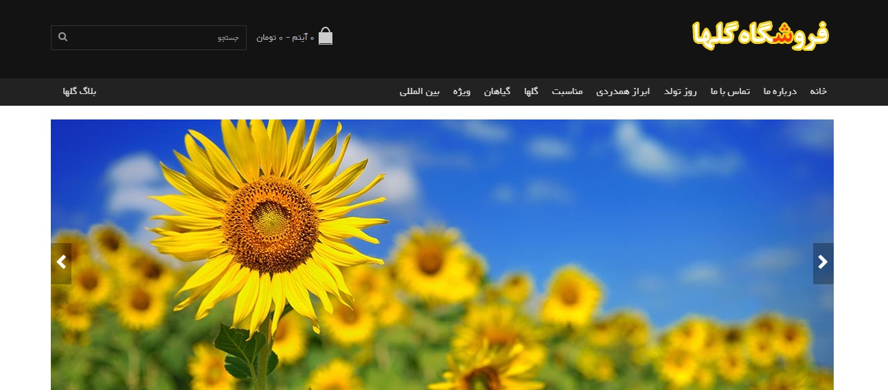
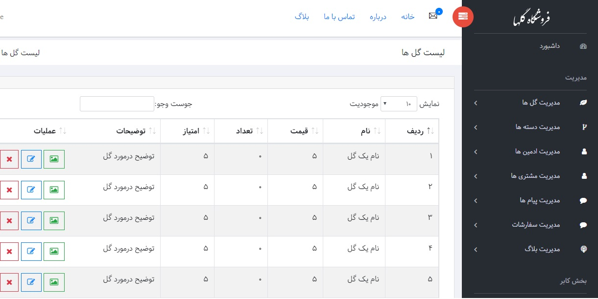
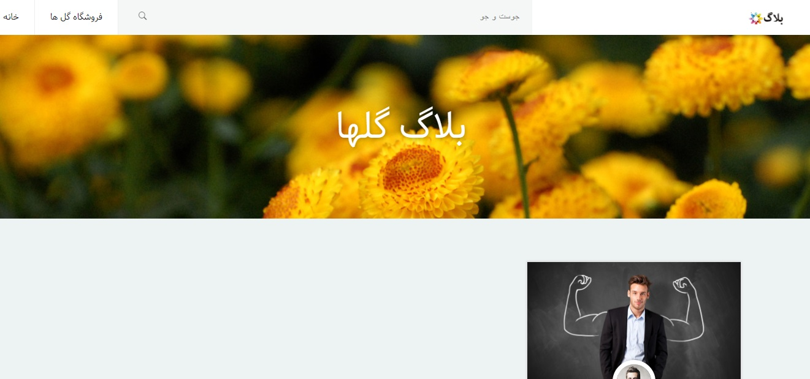

فروشگاه آنلاین گل یک فروشگاه برای خرید اینترنتی انواع گل برای مناسبت های مختلف است
برای تولد، مراسم ترحیم و هر مناسبتی که دوست داریم می توان از این سایت گل مناسب را پیدا کرد و سفارش داد
ما یک سبد خرید داریم که می توانیم گل ها را به آن اضافه کنیم و بعد از پایان خرید ها سفارش دهیم و پس از پرداخت اینترنتی گل ها را درب منزل دریافت کنیم
در تصویر زیر صفحه ی اصلی سایت را مشاهده می کنید
این سایت دارای یک قسمت مدیریتی ست که در آن می توان ادمین های سایت را مدیریت کرد ، پیام های سایت و سفارشات را مشاهده کرد
همچنین از پنل کشویی سمت راست می توان به مدیریت گل ها ، بلاگ و دسته ها پرداخت
در زیر قسمت لیست گل ها را می بینیم که تعداد موجود از گل و قیمت و امتیاز آن را میتوان مشاهده کرد
و به عنوان تصویر آخر قسمتی از سایت را که بلاگ نام دارد مشاهده میکنیم که کاربر میتواند در آن درباره ی گل ها پست بگذارد
کاربرد این قسمت بیان نحوه ی نگهداری گل ها ست و می توان از آن برای اینکه کاربران عکس گل های خود و تجربیاتشان از نگهداری را با هم به اشتراک بگذارند
یا یک نفر به عنوان به روز کننده ی وبسایت هر از گاهی در آن مطلب مفیدی را به اشتراک بگذارد
